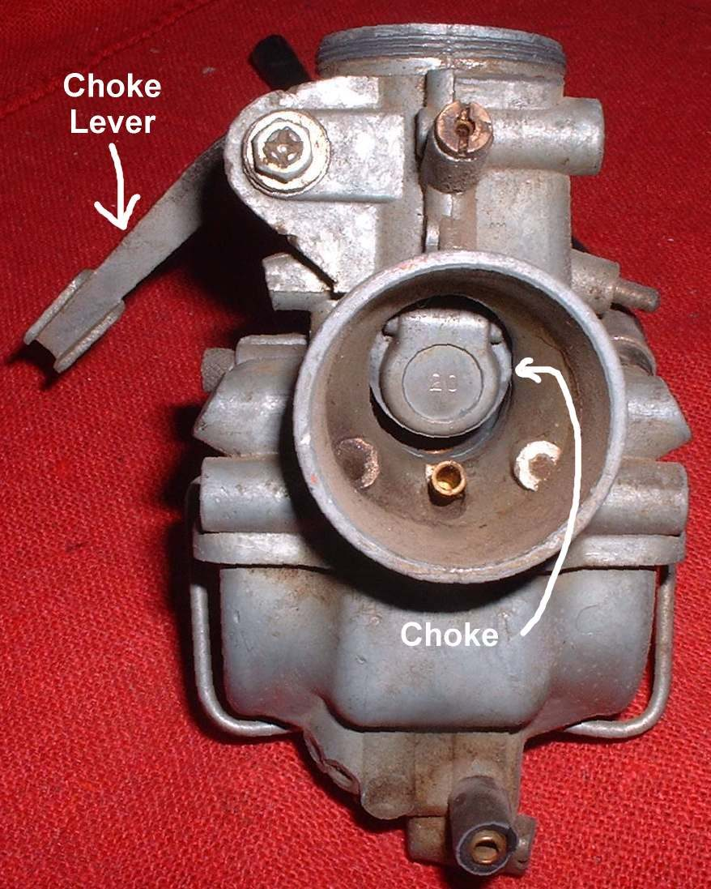
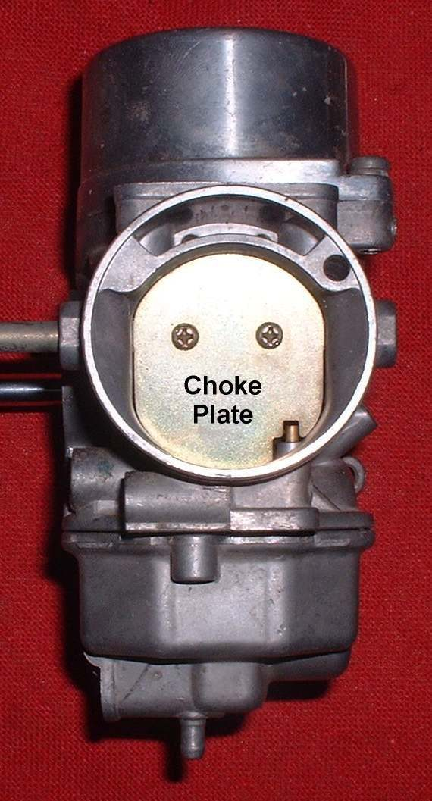
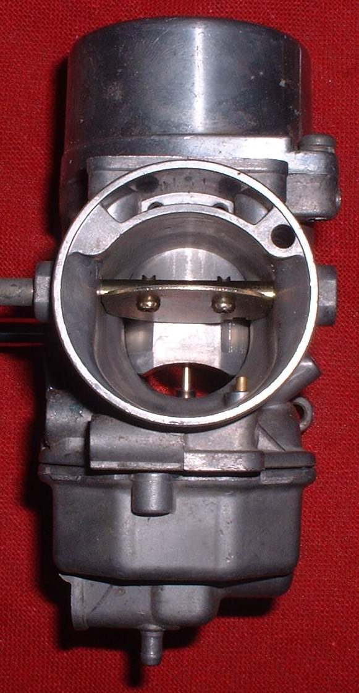
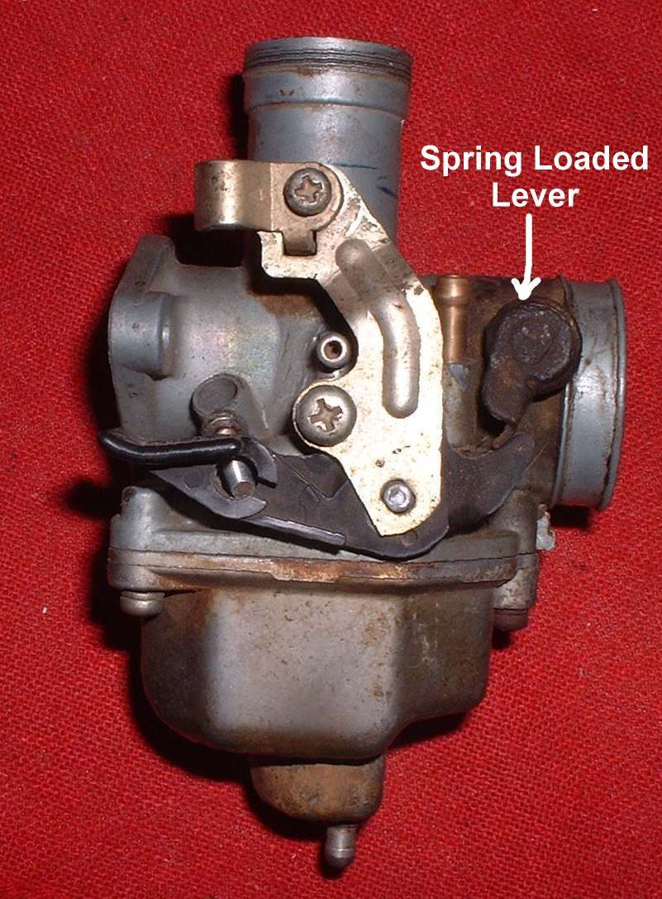
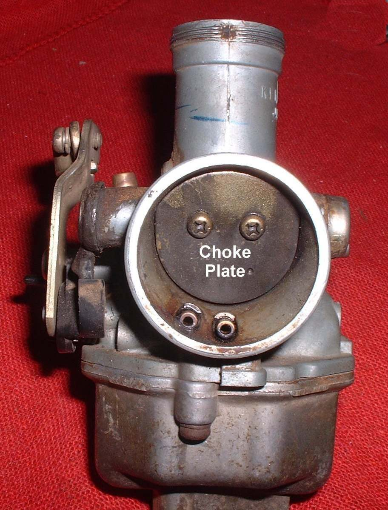
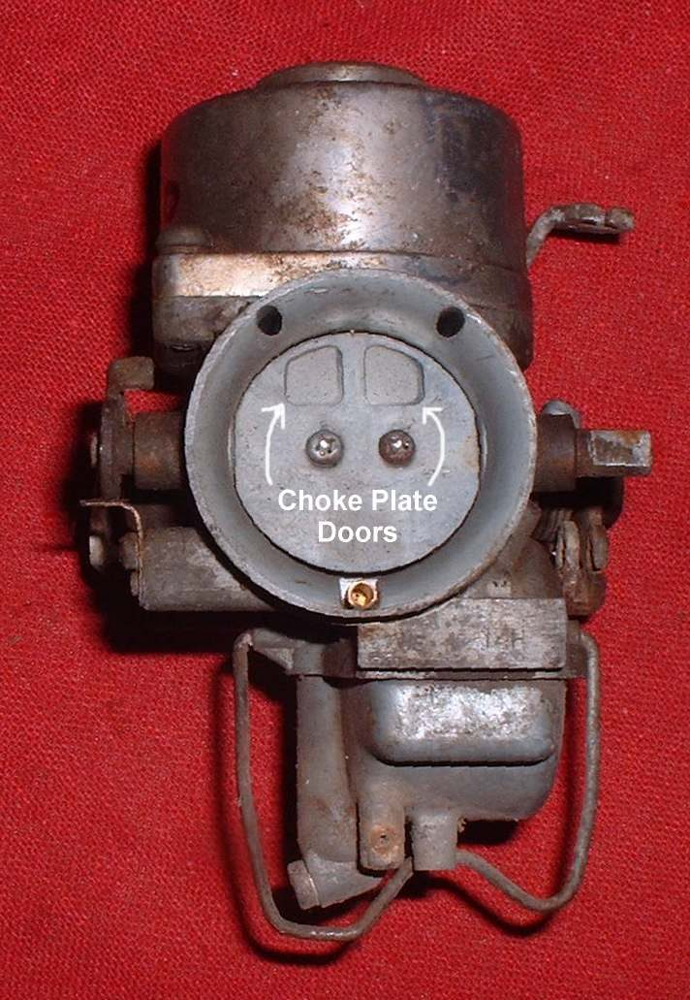
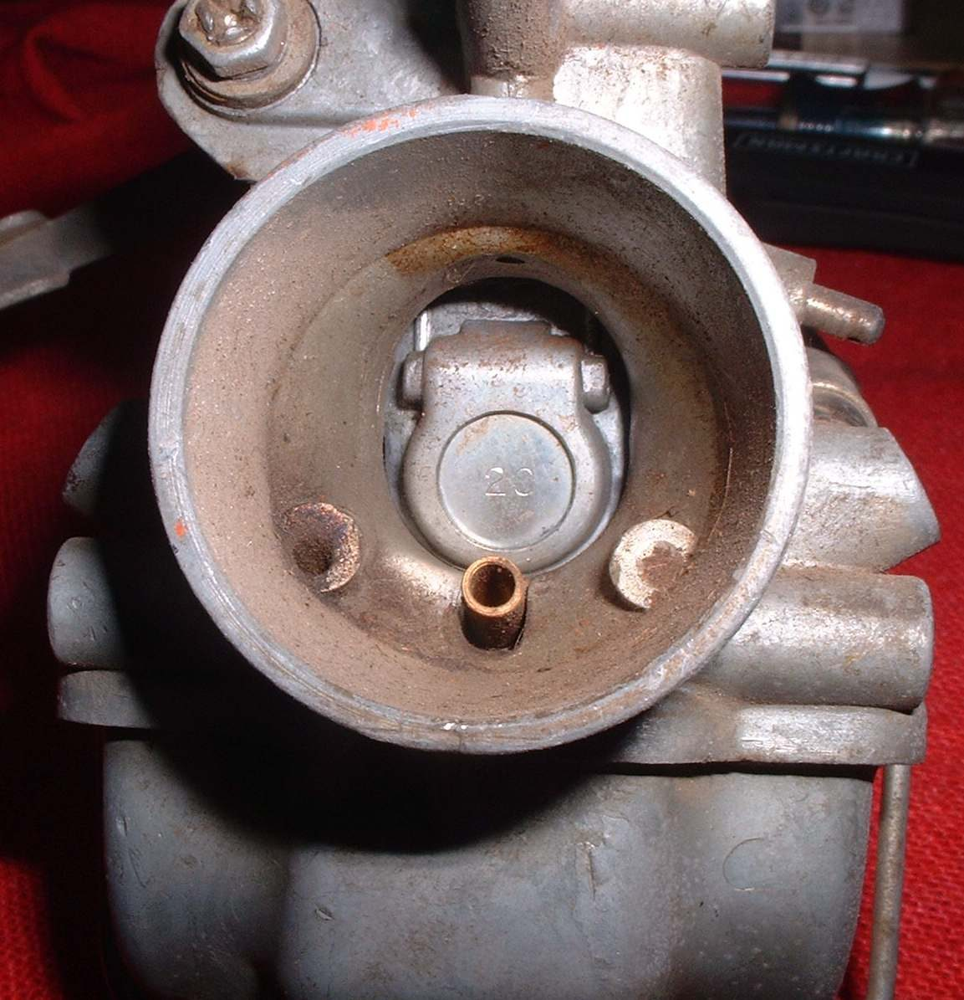

A choke restricts the air entering the carburettor. While the starter or kickstart turns the engine, suction that cannot draw much air pulls extra fuel from the needle jet and idle port, and that fuel starts the engine. Two kinds are common: a plate that drops across the throat, and a guillotine that slides across it. This check finds a choke that does not close, or does not open.
Safety
- Engine off and cool.
- Never keep cranking a starter motor on a bike that will not fire. It overheats the starter. If it does not fire after a few tries, stop and check the choke.
Steps
- Remove the air filter hose or cover enough to see the choke in the carburettor throat. Use a torch.
- Move the choke lever or knob. The plate should close across the throat or the guillotine slide across it, and open fully when released.
- If the plate is spring-loaded, the spring keeps it closed and the lever pushes it open. Check that the spring is not broken. A broken spring is not always obvious. The choke seems on, but it is not.
- Feel the lever with your hand while it should be on. A lever that moves with no resistance can mean a broken spring.
- Some plates have small spring-loaded doors that let in extra air when suction is very high. These should move freely and close flat.
- Check the cable and lever for stiffness. See Adjust the choke cable.
- Check that the choke is fully off once warm. A choke left partly on makes the engine run rich.
Check your work
- Choke closes when on and opens fully when off.
- A cold engine starts, then idles without the choke after warming.
If it did not fix the problem
- Starter circuit type of carburettor: Check the starter plunger and cold-start circuit.
- Check the choke or starter valve.
- Choke is stuck on or will not work.